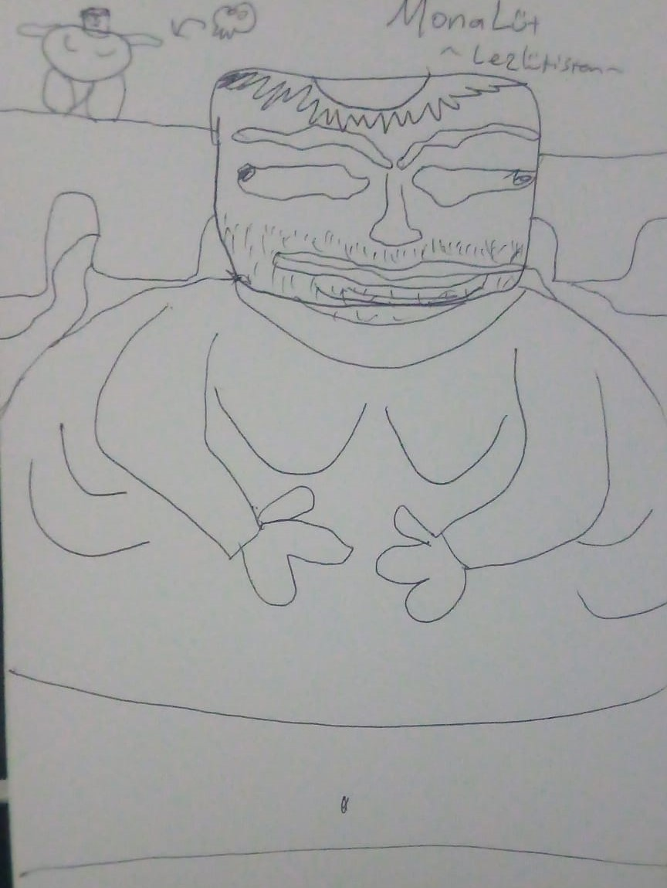

Lezlütistan ansiklopedisine hoş geldiniz!

Çok uzak bir galakside, Lezütistan adı verilen, ekvator bölgesinde bir çizgi halinde orman bulunan onun haricinde son derece kurak ve taşlarla kaplı bir gezegen var. Bu gezegende Lezlütler adı verilen bir canlı türü yaşamaktadır. Bu canlılar son derece sinirli ve öfkelidir. Genel olarak gıda ihtiyaçlarını gezegende bulunan taşları sindirerek karşılarlar. Lezlütlerin mideleri bu tür sert taşları öğütebilecek şekilde evrimleşmiştir. Göz kırparak ve bağırarak iletişim kurulan bu ülkenin lideri Krallüt'tür. (1. 2.LÜT gibi adları vardır ancak Lezlütistan halkı tarafından genel kullanımı "Krallüt" şeklindedir.)
Buradaki toplumu betimlemek gerekirse suratları yukarıda gördüğünüz fotoğrafa benzer. Son derece sinirli ve öfkeli canlılardır. Fiziki özelliklerine gelecek olursak, iri, geniş, kalın bir yapıya sahiptirler.
Bilgi notu: Eğer bir Lezlüt ile karşılaşır ve ona "şişman, obez" gibi tabirler ile seslenirseniz saniyeler içerisinde hayatınızı kaybedebilirsiniz.

Yukarıda da gördüğünüz üzere Lezlütlerin anatomik yapısı bu şekildedir. Vücutlarının en ortasından geçen, tek parça halinde ve son derece ince olan "Lüt" kemiği haricinde gövdelerinde herhangi bir kemik bulunmaz.
Ülkenin yönetim şekli Lezarşi'dir. Lezarşi, yönetimin tamamiyle Krallüt'te olduğu, halkın hiçbir söz hakkına sahip olmadığı bir yönetim şeklidir. Bu yönetim şeklinde halk son derece mutludur. Lezlütler yerde buldukları tüm taşları keyiflerince yiyebilirler.
Lezlütistan'da yaşayan Lezlütlerden birisi düşünmeye başlar. Acaba evrende, bu yaşadıkları gezegenden başka bir galaksi, bir gezegen, bir yaşam formu var mıdır? Bu merakını gidermek için anüsünden gaz çıkararak uzaya çıkmayı başarır. Anüsünden çıkan bu tazyikli gaz sayesinde ışık yılları sürecek olan yolculuğu birkaç ay içerisinde tamamlar.
Vardığı galaksi Samanyolu'dur. Orada mavi ve son derece cezbedici gözüken (Dünya) bir gezegen görür. Bu gezegene iniş yapmaya karar verir. Ve Dünya atmosferine giriş yapar. Atmosferde yanmakta olan Lezlüt "Ateş lütfen beni yakma" diyerek yanmamaya çalışır. Ancak ateş onu dinlemez... Ve tüm cildi siyah olmuş bir şekilde Dünya'ya iniş yapar. İndiği yer Kuzey Kutup noktasıdır. Bu noktada yerde hiçbir taş olmadığını fark eder. Taş olmadan hayatını devam ettiremeyeceğini bilen Lezlüt, etrafını incelemeye başlar. Etraftaki penguenleri yer ve kutup ayıları ile güreşir. En sonund hayatta kalır. Ancak bir sorun vardır. Koca dünyada tek başınadır...
Lezlüt hermafrodit bir canlıdır. Kendi kendine üremeye başlar. Kısa süre içerisinde bu topluluk 1 milyon üyeye kadar ulaşır. Ancak bir sorun vardır. Artık çevrelerinde yeterli besin bulunmamaktadır. O da düşünür ve Kuzey Kutbundan, Güney Kutbuna doğru bir göç haraketi yapmaya karar verir. Baba Lezlüt (Dünya'daki Lezlüt halkının atası olduğu için bu ada sahiptir) göç haraketini başlatır.
Bu göç haraketi tek bir çizgi halinde yapılmıştır. Lezlütler tek bir sıraya girmiş ve göç haraketine başlanmıştır. Önlerinde çıkan buzul okyanusunda en öndeki Lezlüt suya sinirli sinirli bakar. Ve hiçir şey demeden suyun içerisine atlar. Ve maalesef hayatını kaybeder. Ancak Lezlütler düşük bir zeka seviyesine sahip oldukları için tek sıradaki her Lezlüt kendi sırası geldiğinde hiçbir şey demeden, hiçbir şeyi sorgulamadan ve hiçbir şeyi düşünmeden ölümcül derece soğuk olan suya atlar. Popülasyonun %95'i daha ilk buzul okyanusunda yok olur. Ölen Lezlütlerin cesetleri su yüzeyine çıkar ve bu sayede tek sıranın gerisindeki Lezlütler onların üzerine basarak göç haraketlerine devam ederler. Ve içlerinden birisi Macaristan'da göç haraketinden ayrılır. Diğerleri ise göçe devam eder. Ardından birisi de Türkiye'de göç haraketinden ayrılır. Diğerleri ise göçe devam eder. (Macaristan ve Türkiye haricinde de birkaç Lezlüt'ün göç haraketine ihanet ettiği ve göç sırasında çeşitli ülkelerde saklandıkları ve orada kalmaya başladıkları söylentiler arasındadır) En sonunda kalan Lezlütler (Yaklaşık 500 kişi olduğu kaynakta yazar) Güney Kutbuna ulaşır. Ve oradaki kaynakları tüketmeye başlarlar...
O sırada Lezlütistan'da halk son derece memnundur. Karınlarını doyurabildikleri ve hiçbir dertleri olmadığı için sanata ayrıca önem vermmişlerdir. Lezlütistan'da "Monalüt" adı verilen bir sanat eseri yapılmıştır.
Yukarıda da görebileceğiniz üzere sanat Lezlütistan'da son derece gelişmiştir.